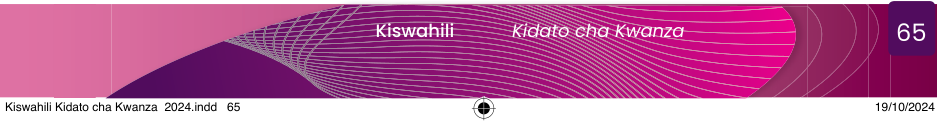

2.Oanisha maelezo yaliyopo katika Orodha A na dhana zilizopo katika Orodha B kwa kuchagua herufi ya jibu sahihi.
| Orodha A | Orodha B |
|---|---|
(i) Kuzingatia habari na kubainisha mawazo makuu na kuyaelewa. | A. kusoma kwa sauti |
(ii) Nukta, mkato, ritifaa, mshangao, kiulizo, nukta pacha | B. kusoma kimyakimya |
(iii) Msomaji hufumba kinywa na kupitisha macho kwenye maandishi. | C. ufupisho |
(iv) Kuimarisha ujuzi wa kutamka kwa kufuata kanuni, na lafudhi ya Kiswahili. | D. alama za uandishi |
(v) Kuandika kwa muhtasari kwa kuzingatia mawazo makuu katika habari. | E. mambo makuu ya kuzingatia katika ufahamu F. ufahamu G. kuchambua maandishi |
3.Mtu anaweza kupata ufahamu kuhusu masuala mbalimbali kwa njia gani?
4.Bainisha vyanzo mbalimbali vya taarifa na maarifa kuhusu masuala ya kijamii, kiuchumi, kiteknolojia na kidiplomasia.
5.Kwa nini kusoma kwa ufahamu ni muhimu katika maisha yetu ya kila siku?
